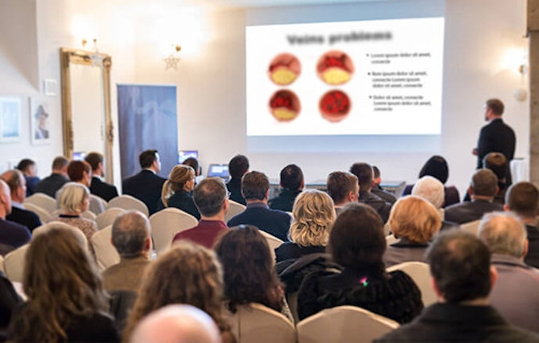

Complicações graves após cirurgia cardíaca
ARTISTAS / DESENVOLVIMENTOS LATEROS / "A era da aterosclerose acabou! Um medicamento pioneiro...
A era da aterosclerose e do ataque cardíaco chegou ao fim? Um sueco descobriu um método que restabelece o fluxo sanguíneo nas veias e a circulação adequada em 28 dias.

Será que este novo método de limpeza arterial não-invasiva o medo de milhões de pessoas de ataques cardíacos e derrames? Os cardiologistas bem conhecidos não têm dúvidas. Simultaneamente com o desenvolvimento de uma fórmula cardio-circulatória natural por parte dos suecos, tem havido um avanço há muito esperado na luta pelo bom funcionamento do sistema circulatório.
Mais de 14.000 utilizadores do Método Cardio-Circulatório de 28 dias limparam as suas artérias e regressaram à plena forma física - naturalmente, em segurança e sem alterar o seu estilo de vida. As pessoas que tiraram partido desta descoberta livraram-se de placas ateroscleróticas e de depósitos de mau colesterol nas suas artérias e normalizaram de uma vez por todas a sua tensão arterial. Isto permitiu-lhes dilatar cada artéria individualmente, restaurar o fluxo sanguíneo normal e encher todos os órgãos com oxigénio. Como resultado, reduziram o seu risco de ataque cardíaco em 185% e de AVC em 168%, protegeram-se da aterosclerose e restabeleceram a saúde dos seus jovens de 20-25 anos. Como é que isto é possível?
O Professor Per-Olov Sandström (especialista em biologia molecular) decidiu curar a grave insuficiência cardíaca da sua esposa, que se revelou ser a causa do seu primeiro ataque cardíaco - e deu início a uma revolução no campo da cardiologia. Após um ano de investigação laboratorial de vanguarda, o professor desenvolveu uma fórmula cardiovascular natural, segura e fácil de usar que limpa as artérias das placas ateroscleróticas, depósitos de mau colesterol e toxinas em 28 dias. Isto melhora a circulação em 180% e faz o sangue fluir corretamente para cada órgão do corpo e fornece-lhe os nutrientes e o oxigénio de que o corpo necessita para viver. Como resultado, cada célula está 100% saturada com oxigénio. Esta fórmula cardio-circulatória não só o salva de doenças cardíacas graves, como também se livra de varizes, cãibras nos vitelos e até de congelamento nos pés e mãos.
As revistas médicas profissionais já saudaram este medicamento como um "sucesso pioneiro na luta contra o fracasso circulatório", e o professor recebeu muitos prémios de prestígio pela sua descoberta. Graças a este efeito milagroso, mesmo as pessoas que lutaram com aterosclerose muito avançada podem ter todas as veias completamente limpas em 28 dias, restaurando a circulação sanguínea adequada em casa.
"As formas tradicionais de lidar com a insuficiência cardíaca são um desperdício de dinheiro"! De onde veio este pensamento?
-
A cirurgia é a última escolha
Quando não há outra opção, tratamentos como a angiografia ou a cirurgia de bypass salvam vidas. No entanto, qualquer cirurgia é perigosa, e a recuperação de um procedimento tão complicado pode levar seis meses. Além disso, 97% dos pacientes precisam de repetir o procedimento após 4-5 anos. Não é melhor resolver o problema desde o início e livrar-se da placa aterosclerótica de forma rápida, segura e natural?
-
Os caramelos publicitados não funcionam
Todos os dias são inundados com centenas de anúncios coloridos de chupa-chupas que "trabalham contra tudo". Deve saber que as pessoas que vê na televisão são apenas actores que não fazem ideia daquilo com que se debate todos os dias. E sabia que estes caramelos coloridos nunca são verificados por especialistas? Na melhor das hipóteses, não funcionam de todo. Na pior das hipóteses, arruinarão ainda mais a sua saúde.
-
A vida sem stress é impossível.
Os médicos de todo o mundo recomendam aos seus pacientes um estilo de vida tranquilo, sem stress e explosões emocionais repentinas. Aparentemente, isto é suposto protegê-los de doenças vasculares e ataques cardíacos. É claro que é mais fácil falar do que fazer. Talvez se alguém ganhar muito e não tiver de se preocupar com o que vai pagar as contas e com o que comprar pão para o dia seguinte. Mas quantas pessoas são assim? Sejamos realistas - uma vida sem stress é quase impossível. A pessoa comum não se pode dar a esse luxo.
-
A actividade física não protege contra ataques cardíacos
Especialistas advertem que um estilo de vida sedentário aumenta o risco de ataque cardíaco em cinco vezes. Acontece que o exercício e um estilo de vida activo, embora muito saudável, não protegem os vasos sanguíneos a 100% de doenças e não podem proteger contra um ataque cardíaco. Em 3 em cada 5 pessoas em risco, a doença continua a desenvolver-se.
-
Os remédios caseiros não são muito eficazes
Os chás à base de ervas da avó podem combater as doenças cardíacas, mas certamente não curarão as doenças existentes. O que é necessário aqui é um método cientificamente comprovado, que pode, naturalmente, ser baseado em ingredientes naturais, mas formulado de forma apropriada e na concentração certa.
É por isso que o tratamento cardio-circulatório do Prof. Sandström é um verdadeiro avanço na luta por um sistema circulatório que funcione bem.
Os métodos tradicionais de tratamento cirúrgico das artérias são ou ineficazes, muito caros ou perigosos para a saúde. A droga do Professor Sandström, por outro lado, dissolve naturalmente as placas ateroscleróticas, os depósitos de mau colesterol e toxinas, que restaura as artérias a 100% da sua capacidade natural. A utilização diária do remédio cardiovascular do Professor Sandström reduz o risco de ataque cardíaco em 185% e de AVC em 168%. Além disso, também restaura o fluxo total de sangue nas artérias das pernas e evita assim a formação de aterosclerose nos membros inferiores (que provoca veias varicosas feias). Mesmo em pessoas que lutaram contra a insuficiência cardíaca durante 30 anos ou mais. E tudo isto em 28 dias!
Agora qualquer pessoa pode ver-se livre de problemas circulatórios em 28 dias.
O remédio cardiovascular do Prof. Sandström já está disponível no comércio sob o nome de Cardiofort. A fórmula está disponível como gotas naturais, facilmente digeríveis e de rápida absorção. Contêm uma composição perfeitamente equilibrada de ingredientes de ervas activos, que são completamente seguros para o corpo. A sua utilização é perfeitamente segura, tal como confirmado por mais investigação do Centro de Investigação Britânico em Liverpool. Estes estudos também demonstraram que a eficácia do medicamento excede os 98%. Com voluntários que participaram no estudo entre 38 e 93 anos, os cientistas obtiveram resultados impressionantes em apenas 28 dias contra problemas circulatórios. Independentemente da idade, sexo, causa ou tempo do problema.
Eficácia comprovada
Estas pessoas, imediatamente após a utilização do remédio cardiovascular do Prof. Sandström, livraram-se de dores no peito, cãibras desagradáveis, varizes e sensação de frio nas pernas e braços, porque os vasos sanguíneos melhoraram. As artérias foram restauradas a 100% da sua capacidade natural para que os vasos pudessem bombear sangue até mesmo para as partes mais distantes do corpo. Após 5 dias de tratamento, começaram a ter um notável aumento de energia e vitalidade, deixaram de sentir falta de ar enquanto caminhavam e tornaram-se mais activos. Eventualmente, estas pessoas tinham removido todas as placas, colesterol e toxinas em todas as suas artérias e tinham-nas limpo, fazendo-as esquecer a dor e a sensação de esmagamento no seu peito. As suas artérias iniciaram um processo de regeneração intensa, livraram-se da inflamação e recuperaram completamente.
Como resultado do tratamento, 98,7% dos vasos sanguíneos afectados pela destruição regeneraram-se e voltaram ao funcionamento normal, livrando-se de placas ateroscleróticas, depósitos de colesterol e toxinas, e começaram a fornecer energia a todos os órgãos. Mas isso não foi tudo. Após 28 dias de tratamento, os participantes admitiram unanimemente que a excelente circulação sanguínea os fazia sentir tão cheios de energia e vivacidade como quando tinham 20-25 anos de idade, e o problema circulatório era apenas uma memória! Os inquiridos acrescentaram que sentiram um enorme alívio porque já não tinham de ter vergonha da sua deficiência, varizes e constante falta de ar. O medo de um derrame ou ataque cardíaco foi reduzido e finalmente conseguiram regressar a uma vida normal!
Os resultados documentados do tratamento falam por si:
Eliminação da dor, cãibras e sensações de frio nos pés e mãos
98,7% de dissolução da placa aterosclerótica nas artérias
Abertura das artérias, melhorando a circulação sanguínea por 3 vezes
Desaparecimento total dos problemas de circulação e aterosclerose
1 semana
2 semanas
3 semanas
4 semanas
1 semana – Eliminação de dores no peito, cólicas e sensação de frio nos pés e mãos.
2 semanas – 98,7% de dissolução de placas ateroscleróticas localizadas nas veias.
Semana 3 – restauração do fluxo sanguíneo nas veias, melhorando a circulação sanguínea por 3 vezes.
4 semanas – desaparecimento completo da aterosclerose, bloqueando o seu regresso no futuro.
Isabel Oliveira (65), de Braga, foi uma das primeiras pessoas em Portugal a utilizar Cardiofort:

"Os meus problemas de circulação começaram muito subitamente. Os meus bezerros sentiam-se um pouco entorpecidos e por vezes tinha cãibras. As minhas mãos e pés estavam por vezes a ficar frios - será que devia ter tratado de tais disparates? Mas após alguns anos, surgiram problemas quando subi as escadas (vivo no 3º andar), depois pensei que todas as pessoas da minha idade também tinham estes problemas. Mas cada vez mais vezes tive de parar e respirar profundamente porque estava a sufocar. E a minha filha acabou então de ter um bebé, estávamos a tomar conta da minha neta, por vezes até a noite toda a pé.
Quando finalmente cheguei ao médico depois de meses de agonia, ele não me poupou. Não só gritou comigo por ter chegado tão tarde, como também não me deu ilusões - ia ser uma operação. Estava planeado para daqui a seis meses. Deus, eu estava tão assustada! Pensei que não iria sobreviver. Felizmente, descobri o Cardiofort. Agora sei que se eu não tivesse usado este medicamento, teria cometido o pior erro da minha vida. Antes não conseguia dar três passos sem ficar sem fôlego, mas agora faço longas caminhadas com a minha neta e corro escadas acima e abaixo como uma jovem rapariga. Estou a explodir com energia! Quando o médico viu os meus resultados, abanou a cabeça! Deveria ter visto a sua reacção! Emília, disse ele, não sei como o fizeste, mas estás perfeitamente saudável! Vamos cancelar a operação. Chorei de pura emoção. Estou muito grata - muito obrigada! "
Deve gastar muito dinheiro em comprimidos químicos ineficazes quando pode limpar as suas artérias de uma forma natural, segura e rentável?
A eficácia do Cardiofort, foi comprovada pelo Centro de Investigação Britânico em Liverpool.
A boa notícia é que pode obter Cardiofort participando num programa de descontos com um preço com desconto de 39 euros. Qualquer pessoa nascida depois de 1938 é elegível para o desconto. A promoção é válida até ao final de ... O medicamento pode ser encomendado através do formulário de encomenda oficial abaixo.
Clique aqui para obter o medicamento com um desconto adicional e restaurar a circulação sanguínea normal de uma vez por todas >>>
Clique aqui para obter o medicamento com um desconto adicional e restaurar a circulação sanguínea normal de uma vez por todas >>>
Oferta especial válida até ..


Tomas
E dizem que os suecos não estão a ter sucesso a nível mundial. excelente execução do formato Nobel. Uma salva de palmas!